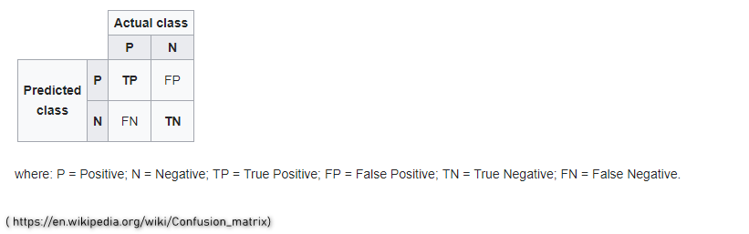

Test the model and create a confusion matrix and ROC curve
Now lets test our model against the test set and create a confusion matrix. Note a cassification threshold of .5 is set initially.
# Predict on test
p <- predict(glm_model, test, type = "response")
# If p exceeds threshold of 0.5, 1 else 0
hd_or_nohd <- ifelse(p > 0.5, 1, 0)
# Convert to factor: p_class
p_class <- factor(hd_or_nohd, levels = levels(test[["hd"]]))
# Create confusion matrix
confusionMatrix(p_class, test[["hd"]])## Confusion Matrix and Statistics
##
## Reference
## Prediction 0 1
## 0 36 10
## 1 22 23
##
## Accuracy : 0.6484
## 95% CI : (0.5412, 0.7456)
## No Information Rate : 0.6374
## P-Value [Acc > NIR] : 0.46057
##
## Kappa : 0.2946
##
## Mcnemar's Test P-Value : 0.05183
##
## Sensitivity : 0.6207
## Specificity : 0.6970
## Pos Pred Value : 0.7826
## Neg Pred Value : 0.5111
## Prevalence : 0.6374
## Detection Rate : 0.3956
## Detection Prevalence : 0.5055
## Balanced Accuracy : 0.6588
##
## 'Positive' Class : 0
## Below gives an idea of how the matrix is structured (https://en.wikipedia.org/wiki/Confusion_matrix)

So from looking at the above and our subsequent confusion matrix we have :
Accuracy of 64% being our TP / (TP + FP)
Sensitivity of 62% being our TP / P
Specificity of 69% being our TN / N
We could then go on to create many confusion matrices as we adjust the classification threshold and compare to others we created. This is not ideal.
Now let’s plot a ROC curve
roc_pred <- prediction(predictions = p , labels = test$hd)
roc_perf <- performance(roc_pred , "tpr" , "fpr")
plot(roc_perf,
colorize = TRUE,
print.cutoffs.at= seq(0,1,0.05),
text.adj=c(-0.2,1.7))
The x axis is the false positive rate and the y axis is the true positive rate. We can see each of the points represents a confusion matrix (like we created above) which we don’t have to evaluate manually. The points represent the tradeoff between true positive and false positive. By looking at the graph we can choose the optimal threshold depending on how many false positives(FP) we are willing to accept.
AUC
We can also calculate the area under the ROC curve. If we look at the area under the curve a perfect model would give an AUC of exactly 1.00 and the average AUC for a random model is .5 (no better than random guessing) as the plot represents a diagonal line. AUC is a single number summary that allows us to evaluate the model accuracy without looking at confusion matrices. Typically we want a model with .8 or higher. We can also use this to compare AUC against other models.
(auc_ROCR <- performance(roc_pred, measure = "auc"))## A performance instance
## 'Area under the ROC curve' (auc_ROCR <- auc_ROCR@y.values[[1]])## [1] 0.7583595From here one way to improve our model woul be to include aditional revelant predictors.